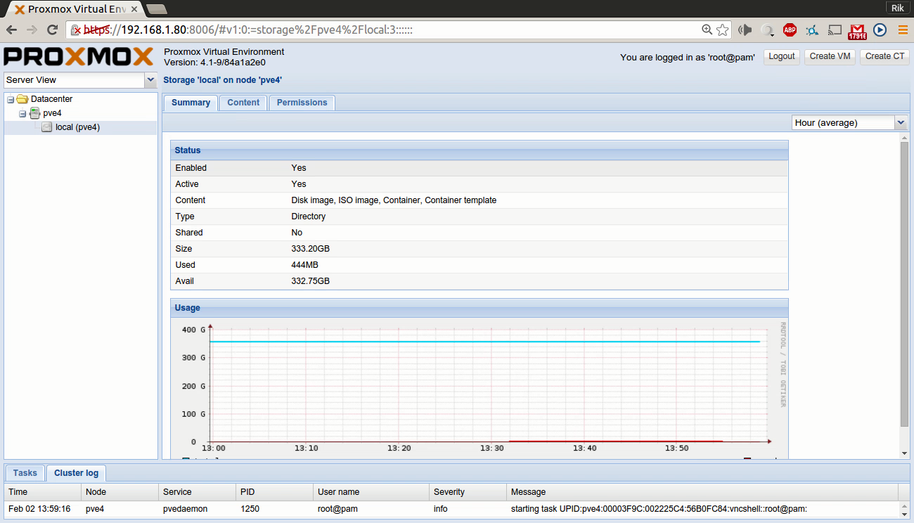

<map name="map">
<!-- #$-:Image map file created by GIMP Image Map plug-in -->
<!-- #$-:GIMP Image Map plug-in by Maurits Rijk -->
<!-- #$-:Please do not edit lines starting with "#$" -->
<!-- #$VERSION:2.3 -->
<!-- #$AUTHOR:rik -->
<area shape="rect" coords="20,151,117,169" onmouseover="Node options" href="node.html" />
<area shape="rect" coords="359,163,426,185" onmouseover="Click to browse and download templates" href="localtemplates.html" />
<area shape="rect" coords="432,164,488,184" onmouseover="Upload content" href="localupload.html" />
<area shape="rect" coords="48,171,152,191" onmouseover="Local storage" href="local.html" />
<area shape="rect" coords="386,135,473,154" onmouseover="Add permissions" href="localpermissionsadd.html" />
<area shape="rect" coords="3,100,227,127" onmouseover="Views" href="serverview.html" />
<area shape="rect" coords="315,138,374,154" onmouseover="Local content" href="localcontent.html" />
<area shape="rect" coords="235,135,305,158" onmouseover="Local summary" href="localsummary.html" />
<area shape="rect" coords="1082,71,1137,91" onmouseover="Logout of Proxmox Manager"  nohref="nohref" />
<area shape="rect" coords="1144,70,1212,92" onmouseover="Create virtual machine" href="createvm.html" />
<area shape="rect" coords="1220,70,1293,91" onmouseover="Create container" href="createct.html" />
</map>
